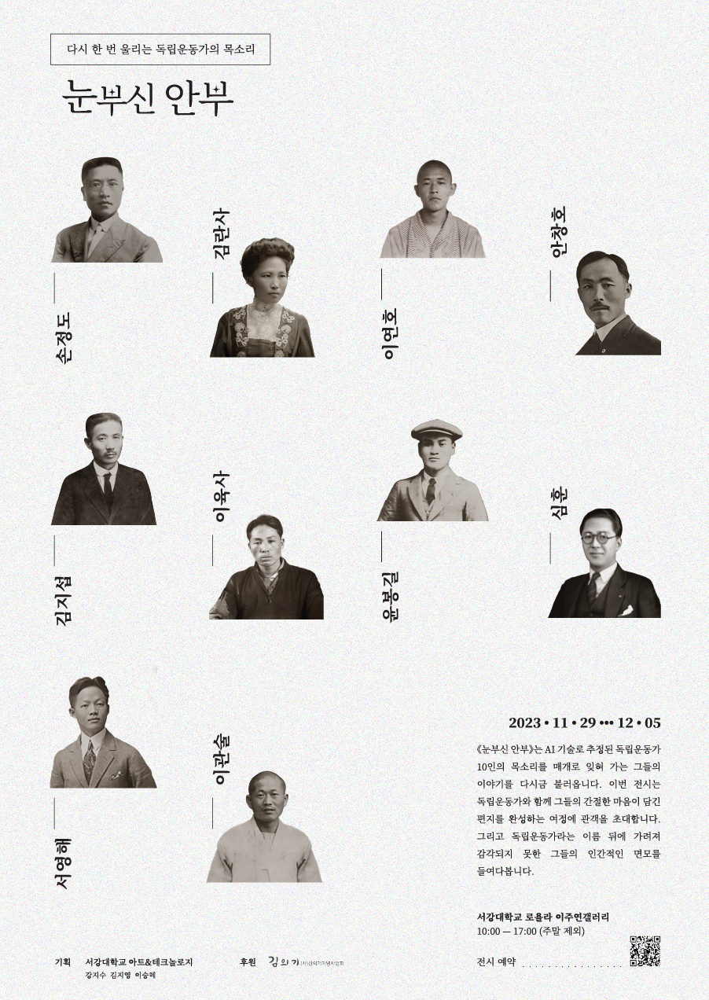

다시 한 번 울리는 독립운동가의 목소리

2023.11.29 • • • 12.05 서강대학교 로욜라 이주연갤러리 이번 전시에서는 김란사, 김지섭, 서영해, 손정도, 심훈. 안창호, 윤봉길, 이관술, 이연호, 이육사 총 10인의 독립운동가를 만날 수 있다. 관객은 독립운동가와 함께 그들의 간절한 마음이 담긴 편지를 완성하는 여정에 함께 한다. 자유 의지, 독립에 대한 염원, 가까운 이들을 향한 사랑 등 독립운동가가 가족이나 동료에게 쓴 편지와 일기를 그들의 목소리로 들어본다. 그리고 관객은 독립운동가의 이름 뒤에 가려져 감각되지 못했던 그들의 인간적인 면모를 발견하고 그들이 개인적이고도 사회적인 맥락과 이야기를 가진 한 명의 인간으로 우뚝 서는 과정에 함께한다.